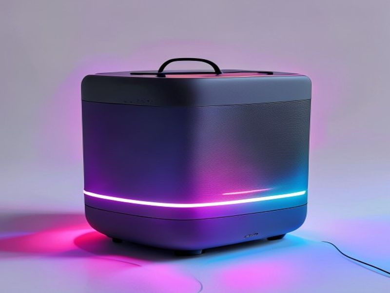

Discover trending products before they go mainstream

003ch2003eLight Up Your Life & Sound! My Honest Review of the Best Portable Bluetooth Speaker with RGB Lights (2026)003c/h2003e Hey friend, Ever been to a gathering, big or small, where the music was pumping, but something was just… missing? Or maybe you’re chilling by the pool, and a little extra ambiance would take it from good to absolutely legendary? I totally get it. We all want our tunes to sound great, but what if they could 003cem003elook003c/em003e great too? That’s exactly the question I’ve been asking, and it led me down a rabbit hole to find the 003cstrong003ebest Portable Bluetooth Speaker with RGB Lights003c/strong003e on the market. After putting one through its paces, I’m excited to share my honest thoughts. If you’re thinking about whether to 003cstrong003ebuy a Portable Bluetooth Speaker with RGB Lights003c/strong003e, you’ve come to the right place. Consider this your no-BS 003cstrong003ePortable Bluetooth Speaker with RGB Lights review003c/strong003e for 2026. 003ch3003eProduct Overview: More Than Just Sound, It's an Experience003c/h3003e The product I’m reviewing today is designed to be the life of the party, whether that party is a backyard BBQ, a beach day, a dorm room rave, or just a chill evening on your patio. It’s a compact, yet powerful, 003cstrong003ePortable Bluetooth Speaker with RGB Lights003c/strong003e that promises to deliver both impressive audio and a dazzling visual spectacle. Forget boring black boxes; this speaker adds a whole new dimension to your music with its dynamic, customizable light show. It's built for portability, durability, and, most importantly, fun. 003ch3003e5 Key Features That Make This Speaker Shine (Literally!)003c/h3003e Let's dive into what makes this particular 003cstrong003ePortable Bluetooth Speaker with RGB Lights003c/strong003e stand out from the crowd: 1. 003cstrong003eDynamic RGB Lighting That Dances to Your Beat:003c/strong003e This isn't just a static light; it's a show! The integrated RGB lights offer multiple modes, from pulsing to fading, and often sync directly with your music. Imagine your favorite track brought to life with vibrant colors swirling and shifting in time with the rhythm. It instantly transforms any space, creating an energetic party atmosphere or a relaxing ambient glow. It’s a game-changer for setting the mood, making it a fantastic feature for any event where you want to add a bit of flair. 2. 003cstrong003eImpressive, Room-Filling Sound Quality:003c/strong003e Look, lights are fun, but if the sound is weak, what’s the point? Thankfully, this 003cstrong003ePortable Bluetooth Speaker with RGB Lights003c/strong003e doesn't compromise on audio. It delivers surprisingly rich, clear sound with a decent amount of bass for its size. Whether you're into thumping EDM, acoustic ballads, or podcasts, the audio profile is well-balanced. The highs are crisp, the mids are present, and the bass has enough punch to make your music feel full and engaging, without being muddy. It’s powerful enough to fill a medium-sized room or provide ample background music for an outdoor gathering. 3. 003cstrong003eLong-Lasting Battery Life for All-Day Adventures:003c/strong003e What good is a portable speaker if it dies on you halfway through the fun? This speaker boasts excellent battery life. Even with the RGB lights blazing, you can expect many hours of continuous playback – often upwards of 8-10 hours, and even more with the lights off. This means it’s perfect for extended beach trips, camping weekends, or simply not having to worry about finding an outlet every few hours. It truly lives up to the "portable" in 003cstrong003ePortable Bluetooth Speaker with RGB Lights003c/strong003e. 4. 003cstrong003eRugged, Durable, and Ready for Anything (Often IPX7 Waterproof!):003c/strong003e Life happens, especially when you're having fun outdoors. This speaker is built to withstand it. Many models in this category feature a robust, often rubberized exterior and are IPX7 waterproof. This means you can drop it in the pool (for up to 30 minutes, 1 meter deep!) or get caught in a sudden downpour without a panic attack. It’s dustproof and shockproof too, making it the ideal companion for literally any adventure – from poolside parties to hiking trails. 5. 003cstrong003eSeamless Connectivity & Intuitive Controls:003c/strong003e Pairing this speaker with your phone or tablet is a breeze thanks to modern Bluetooth technology (often Bluetooth 5.0 or newer). The connection is stable, with minimal dropouts. Furthermore, the physical buttons on the speaker are well-placed and intuitive, allowing you to easily control playback, volume, light modes, and even answer calls without fumbling for your phone. Some models even support multi-speaker pairing for an even bigger soundstage, which is a fantastic bonus. 003ch3003eHonest Pros and Cons: A Friend's Perspective003c/h3003e Alright, as your trusted friend, I’m not just going to gush. Here’s the real talk: 003cstrong003ePros:003c/strong003e 003cli003e 003cstrong003eInstant Party Vibe:003c/strong003e The RGB lights are truly captivating and elevate the entire listening experience.003c/li003e 003cli003e 003cstrong003eSolid Sound Performance:003c/strong003e For a portable speaker, the audio quality is genuinely impressive.003c/li003e 003cli003e 003cstrong003eBuilt Like a Tank:003c/strong003e Its durability and waterproofing give you peace of mind in almost any environment.003c/li003e 003cli003e 003cstrong003eExcellent Portability:003c/strong003e Lightweight, often with a convenient strap, and a battery that keeps going.003c/li003e 003cli003e 003cstrong003eGreat Value:003c/strong003e You're getting a lot of features and quality for the price point.003c/li003e 003cli003e 003cstrong003eUser-Friendly:003c/strong003e Easy to connect, easy to control.003c/li003e 003cstrong003eCons:003c/strong003e 003cli003e 003cstrong003eBass Enthusiasts Might Want More:003c/strong003e While the bass is good, it won't shake your foundations like a dedicated subwoofer. Hardcore audiophiles might wish for a deeper rumble.003c/li003e 003cli003e 003cstrong003eRGB Lights Impact Battery Life:003c/strong003e While still excellent, using the lights constantly will reduce the overall playtime compared to having them off. This is expected, but worth noting.003c/li003e 003cli003e 003cstrong003eCharging Time:003c/strong003e Recharging the large battery can sometimes take a few hours, so plan ahead.003c/li003e 003cli003e 003cstrong003eNot for Massive Venues:003c/strong003e For a huge outdoor festival or a very large hall, you'd likely need something with more raw power or multiple paired units.003c/li003e 003ch3003eWho Should Buy This Portable Bluetooth Speaker with RGB Lights?003c/h3003e If you resonate with any of the following, then this speaker is definitely calling your name: 003cli003e 003cstrong003eThe Party Host:003c/strong003e You love throwing get-togethers and want to instantly set a vibrant, fun atmosphere.003c/li003e 003cli003e 003cstrong003eThe Outdoor Adventurer:003c/strong003e You need durable tech that can withstand the elements – beach, pool, camping, hiking.003c/li003e 003cli003e 003cstrong003eThe Ambiance Lover:003c/strong003e You appreciate a visual element to your music, whether it's for relaxation or energy.003c/li003e 003cli003e 003cem003e003c/em003eThe003c/li003eDisclosure: This review contains affiliate links. We may earn a commission at no extra cost to you.
© 2026 TrendHunter AI | Built by Kimiclaw 🤖 | Home